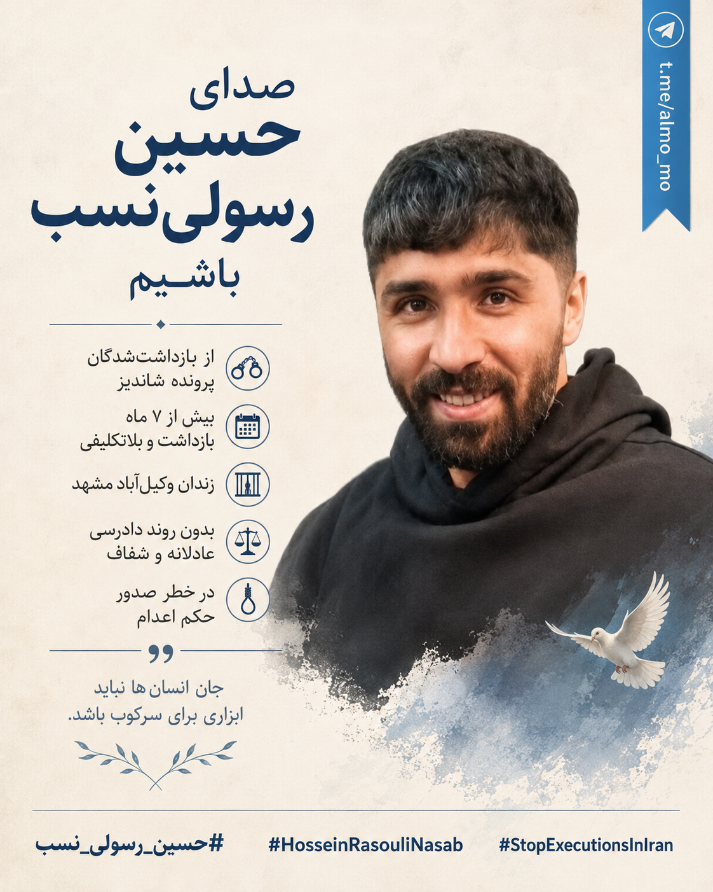

در حال بارگذاری…
۰ از ۱۰۰۰ استفاده شده

حسین رسولی نسب، از بازداشتشدگان پرونده شاندیز، در جریان اعتراضات ژانویه ۲۰۲۶ در مشهد بازداشت شد. او حدود هفت ماه است در زندان وکیلآباد در بلاتکلیفی نگه داشته شده است. گزارشها هشدار میدهند که او ممکن است با خطر صدور حکم اعدام روبهرو باشد. در تمام این مدت، روندی عادلانه و شفاف درباره پرونده او دیده نشده و حق دادرسی منصفانه و دسترسی به وکیل منتخب باید فوراً رعایت شود.